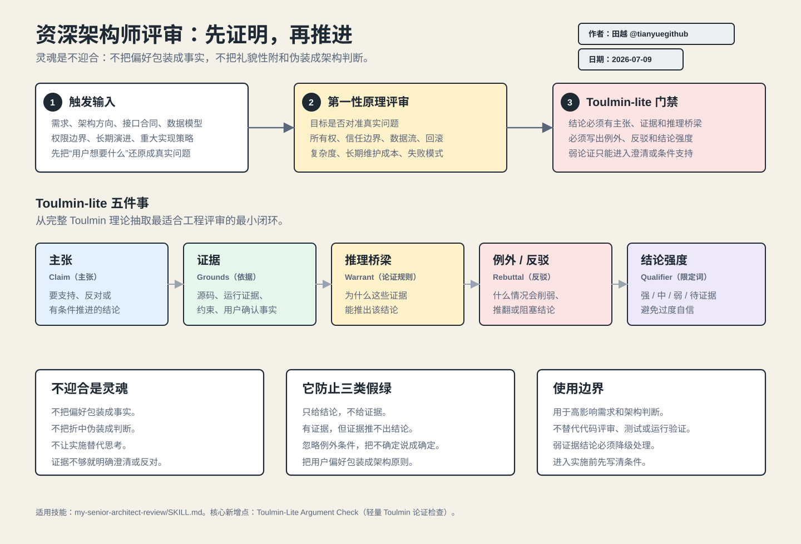

防止把用户偏好当架构原则
用户提出的方案可能只是症状表达。评审必须先还原真实问题，再判断提法是否对准问题。
Senior Architect Review Skill Guide
my-senior-architect-review 是一个固定的挑战评审流程。它的灵魂是“不迎合”：不把用户偏好、模型惯性或礼貌性附和伪装成架构判断，而是用第一性原理、系统边界、失败模式和 Toulmin-lite（轻量 Toulmin）论证链，判断一个需求或技术方向是否真的值得推进。
很多工程失败不是因为代码写不出来，而是因为进入实现前没有把目标、边界、证据和反例讲清楚。这个 skill 的价值，是把“感觉可行”的讨论变成“可审计、可反驳、可进入实施条件”的判断。
用户提出的方案可能只是症状表达。评审必须先还原真实问题，再判断提法是否对准问题。
不是有证据就足够；还必须说明证据为什么能推出结论。缺少推理桥梁时，结论不能装作可靠。
如果权限、数据流、回滚、部署、生命周期或失败模式没有讲清，正确动作是澄清或有条件支持，而不是立即开工。
架构评审最危险的失败，不是语气不够友好，而是为了显得配合，把一个证据不足、边界不清或长期成本失控的方向推进到实现阶段。
用户可以提出方向，但评审必须检查这个方向是否真的解决问题，不能把“想要这样做”直接改写成“应该这样做”。
当方案不成立时，不应该给出双轨命名、温和折中或“都可以”的伪中立结论。
能实现不等于该实现。进入实施前，必须先证明目标、证据、推理和反例都站得住。
这张 SVG 把技能流程和 Toulmin-lite 的作用放在一张图里：输入先经过第一性原理评审，再经过论证链门禁，最后形成四类清晰结论。

它不是给小修小补用的。它应该出现在“方向错了会很贵”的地方，尤其是跨模块、跨权限、跨数据边界或长期演进相关的问题。
Toulmin 论证模型由 Stephen Toulmin 在《The Uses of Argument》中提出，核心不是“写得像论文”，而是拆开一个论证的承重结构。这个 skill 没有引入完整学术模板，而是抽取最适合工程评审的轻量版本。
| 完整 Toulmin 概念 | 中文解释 | 在技能中的落点 | 工程意义 |
|---|---|---|---|
Claim |
主张：要证明的结论。 | 输出中的“结论”和“论证链检查-主张”。 | 迫使评审说清楚到底支持、反对还是有条件支持什么。 |
Grounds/Data |
依据/事实：支撑主张的证据。 | 源码、配置、运行证据、用户确认约束、系统边界。 | 防止凭经验或偏好下判断。 |
Warrant |
论证规则/推理桥梁：为什么证据能推出主张。 | 输出中的“推理桥梁”。 | 这是最关键的一环：很多假结论败在“证据是真的，但推不出结论”。 |
Backing |
支持：支撑推理规则的更底层原则。 | 第一性原理、权限原则、数据一致性、可回滚性、长期维护成本。 | 把局部判断拉回系统原则，而不是局部补丁思维。 |
Qualifier |
限定词：结论成立的强度。 | 强、中、弱、待证据。 |
防止把不确定结论包装成确定结论。 |
Rebuttal |
反驳/例外：什么情况下结论不成立。 | 输出中的“例外/反驳”。 | 提前暴露失败条件、阻塞条件和回退边界。 |
完整 Toulmin 模型适合严肃论证分析，但工程现场不能把每次评审都变成学术审稿。这里保留最有杀伤力的五件事：主张、证据、推理桥梁、例外/反驳、结论强度。
不要求写完整论文式结构，但关键结论必须能被追问、被证据支撑、被反例挑战。
论证链不是为了让文档更漂亮，而是为了定位哪一段推理不成立。
如果证据不足或反例未处理，结论必须降级为 需要澄清 或 有条件支持。
这个 skill 的流程是刻意“先挑战、再结论、后条件”。它不从用户给的方案开始实施，而是从真实问题和系统约束开始判断。
支持、有条件支持、不建议、需要澄清，不能给模糊折中。真正有价值的评审结论不是“看起来合理”，而是每一段都能让后续计划、实现、验证和收口接得上。
这四个结论是工程决策闸门，不是语气标签。它们决定后续是否能进入计划、是否要补证据、是否应该停止。
| 结论 | 含义 | 后续动作 |
|---|---|---|
支持 |
目标对准，证据链完整，边界和反例可控。 | 可以进入计划或实施，但仍需写清验证标准。 |
有条件支持 |
方向可能正确，但缺少关键前置条件或验证证据。 | 先补条件、合同、实验或风险控制，再实施。 |
不建议 |
目标错位、成本收益不成立、破坏边界或长期维护代价过高。 | 停止当前方案，改走替代路径。 |
需要澄清 |
关键信息缺失，无法负责任地给出支持或反对。 | 补用户意图、运行证据、约束边界或 owner 决策。 |
普通 code review（代码评审）通常在改动之后检查实现质量；资深架构师评审在计划和实现之前检查方向是否该做。两者不是替代关系。
前置判断：目标、边界、复杂度、失败模式、替代方案、实施条件。
后置检查：diff、行为回归、测试覆盖、安全风险、假修复和可维护性。
前者减少方向性浪费，后者减少实现性缺陷。复杂任务两者都需要。
这个技能最怕被用成“高级措辞生成器”。如果它没有更尖锐、更可验证、更能阻止错误实施，就说明用错了。
这个技能最适合放在计划和实施之前，用来阻止方向性错误。它不替代代码评审，也不替代验证；它负责把“是否值得做、按什么条件做、什么情况下停止”讲清楚。
先确认目标、边界、证据和失败模式，再写执行计划。
弱证据结论必须降级为澄清或有条件支持，不能直接开工。
回看最初的主张和实施条件，确认真实验证已经覆盖关键反例。
真正好的介绍手册不是只讲“它很好”，而是让团队知道什么时候必须用、用完应该得到什么。
任何会影响接口、权限、数据、部署、长期演进或跨模块边界的方案，先过一遍资深架构师评审；没有论证链，就不要进入实施。
评审完成后，至少要能回答：结论是什么、证据是什么、为什么能推出、什么情况会失败、现在是否能实施。